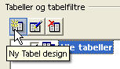
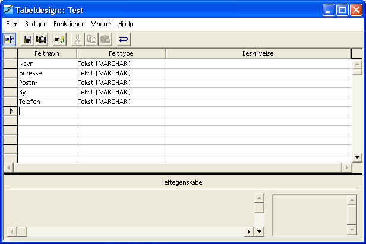

Opret en datakilde fra grunden
OpenOffice.org dokumentationsprojektet
Indholdsfortegnelse:
Opret datakilde
- V�lg Funktioner->Datakilder i menuelinjen.
- Klik p� Ny datakilde.

- Tast et navn til din datakilde (jeg kalder den for "Test")
- V�lg dbase som databasetype (vi bruger dbase, fordi den tillader fuld kontrol over databasen p� det lokale system)
- V�lg en mappe til din datakilde. Du kan v�lge en eksisterende mappe, eller du kan skrive stien til en ny mappe, s� bliver den oprettet.
Opret en tabel i datakilden
- Klik p� fanebladet Tabeller. 
- Klik p� knappen Ny Tabel Design
- Det �bner Tabeldesign-vinduet 
- Skriv Navn
- Tryk tre gange p� Tab-tasten
- Skriv Adresse
- Tryk tre gange p� Tab-tasten
- Skriv Postnr
- Tryk tre gange p� Tab-tasten
- Skriv By
- Tryk tre gange p� Tab-tasten
- Skriv Telefon
- Klik p� Filer
- Klik p� Gem
- V�lg et navn til din tabel (i eksemplet kalder vi den for Testtabel)
- Afslut Tabeldesign-vinduet
- Afslut Datakildeadministrationen.
Indtast data i tabellen
Dette afsnit fort�ller, hvor du kan inds�tte, redigere og slette v�rdier i en datakilde.
- Tryk F4
- Det �bner Datakilde-vinduet
- Klik p� Test-datakilden
- Klik p� Tabeller
- Klik p� Testtabel

- Opret en ny post ved at begynde at skrive. Skriv oplysninger, der st�r ovenover eller find selv p� nogle andre. Skift fra felt til felt ved at trykke p� Tab-tasten.
- For at rette i en post, skal klikke i det felt du vil rette og derefter skrive oven i teksten. Vil du slette teksten, trykker du p� Delete-tasten.
- Hvis du vil slette en post, klikker du i den gr� firkant til venstre for den og trykker p� Delete-tasten. Du kan ogs� bruge et h�jreklik og v�lge Slet.
Hvad s� nu?
Nu, hvor du har set nogle af de ting, du kan g�re med databaser i OpenOffice.org, vil jeg foresl�, at du pr�ver:
- At oprette flere tabeller og lege med forskellige datatyper i kolonnerne.
- At du pr�ver at oprette SQL-s�tninger i Datakildeadministration-vinduet � under fanebladet foresp�rgsler.
Bem�rk: Du kan ikke komme til at g�re nogen skade ved at eksperimentere med den database, der er oprettet i denne How To.
Kreditering
Forfatter: Scott Carr
Sidst revideret: 2. marts 2002
Oversat af: Carl Rosschou, februar 2004.